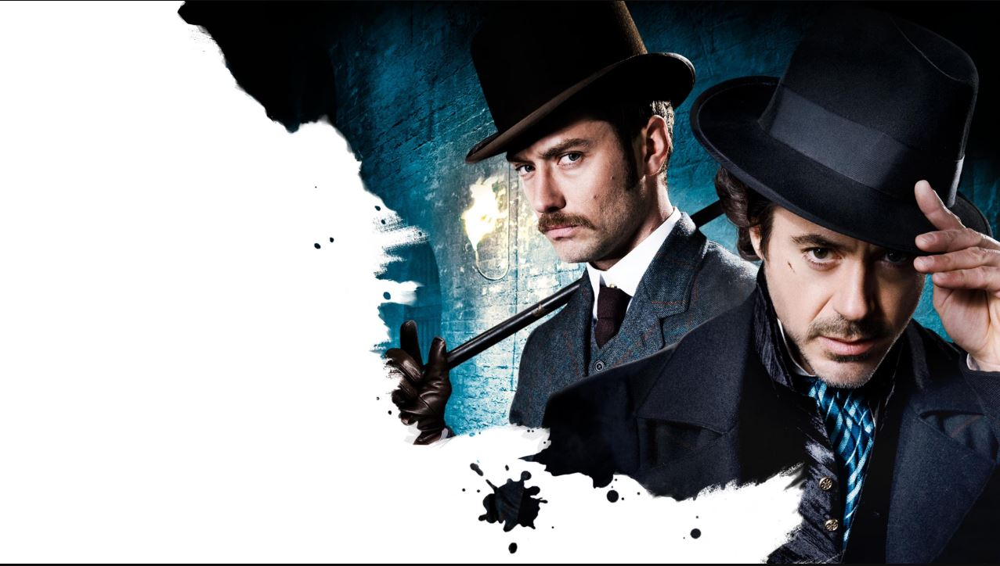

Sherlock Holmes
El detective que convirtió la lógica en un arte
1. Sherlock Holmes “murió”… y los fans protestaron
En El problema final (1893), Conan Doyle mata a Holmes en las cataratas de Reichenbach. La reacción fue tan violenta que: Los lectores usaron brazaletes negros de luto Las ventas de la revista cayeron ➡️ El autor se vio obligado a revivirlo años después.
2. Holmes es más famoso que su autor
Sherlock Holmes aparece en: Más de 300 películas Series, mangas, videojuegos y anime Es uno de los personajes más adaptados de la historia Incluso hay personas que creyeron que fue real y escribían cartas al 221B Baker Street.
3. No decía tanto “Elemental, mi querido Watson”
La frase: “Elemental, my dear Watson” NO aparece así en los libros originales. Es una construcción posterior del cine, aunque sí dice “elemental” y “mi querido Watson” por separado.
4. Holmes tenía adicciones
Cuando no tenía casos interesantes: Consumía cocaína al 7% También morfina Esto refleja una crítica social de la época y su adicción al estímulo intelectual.
